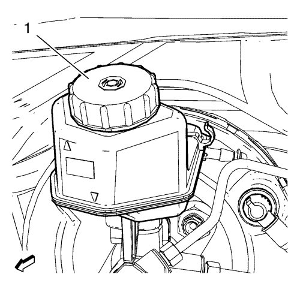
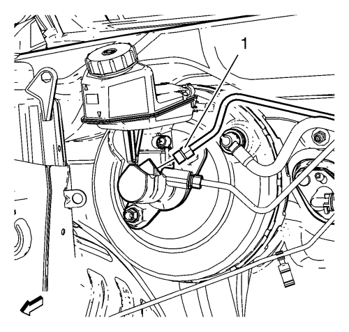
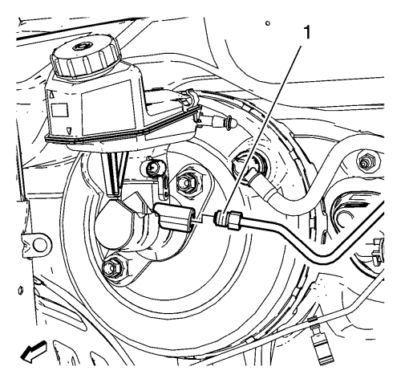
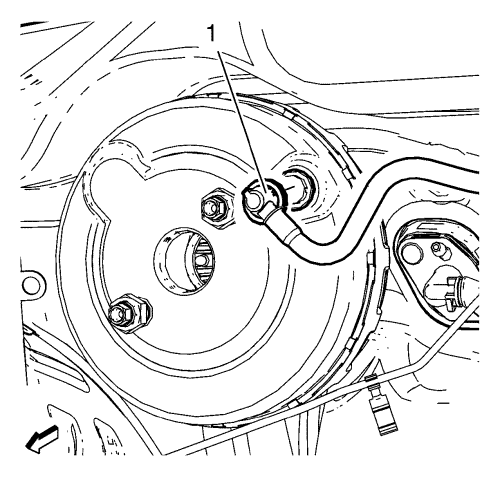
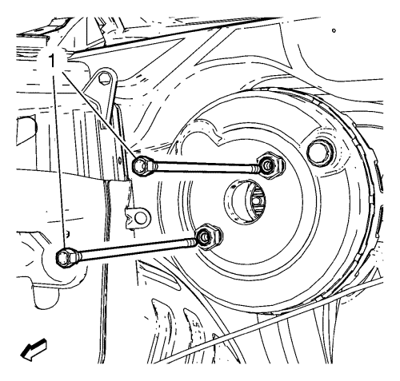

Sustitución del servofreno eléctrico — Volante a la derecha
Herramientas especiales
CH 558-10 Tapa de cierre
Si desea informarse sobre herramientas regionales equivalentes, consultar Herramientas especiales .
Advertencia: Consulte Advertencia de líquido de frenos irritante en la sección Prólogo.
Precaución: Consulte Advertencia sobre los efectos del líquido de frenos sobre la pintura y los componentes eléctricos en la sección Prólogo.
Atención: Al añadir líquido al depósito acumulador de líquido de frenos o al depósito acumulador de líquido del embrague, sólo utilice líquido de frenos DOT-4 de un recipiente nuevo sin abrir. Este líquido de frenos poliglicólico es higroscópico y absorbe la humedad. No utilice líquido de un recipiente abierto que pueda estar contaminado con agua. El líquido inadecuado o contaminado podría dañar los componentes del sistema.
Procedimiento de desmontaje
- Gire el encendido a la posición OFF.
- Extraiga el conjunto del filtro de aire. Consultar Sustitución del filtro de aire → LDE, LXV, LUW, 2H0 .
- Afloje el perno de desmontaje del depósito del mecanismo de la dirección

- Desmonte la tapa del depósito de líquido de frenos e instale la tapa CH 558-10 (1) para impedir la pérdida de líquido o contaminación.

Nota: Tape los herrajes del tubo del freno para evitar la pérdida de líquido de frenos y la contaminación.
- Desconecte el herraje del tubo de freno secundario del cilindro maestro (1).

Nota: Tape los herrajes del tubo del freno para evitar la pérdida de líquido de frenos y la contaminación.
- Desconecte el herraje del tubo de freno primario del cilindro maestro (1).
- Desmonte el conjunto del cilindro maestro de freno del servofreno. Consultar Sustitución del cilindro maestro → Volante a la derecha → Volante a la izquierda .

- Desmonte el tubo de vacío del servofreno (1) del servofreno.

- Desconecte el empujador del pedal del freno (1) del pedal de freno.

- Desmonte los pernos del servofreno (1).
- Desmonte la sobrealimentación del vehículo.
Procedimiento de montaje
- Monte el servofreno en el vehículo.
Precaución: Consulte Precaución con las fijaciones en la sección Prólogo.
- Monte los pernos del servofreno (1) y apriételos a 19 N·m (15 lib. pie).
- Conecte el empujador del pedal de freno (1) al pedal de freno.
- Monte el tubo de vacío del servofreno (1) al servofreno.
- Monte el conjunto del cilindro maestro al servofreno. Consultar Sustitución del cilindro maestro → Volante a la derecha → Volante a la izquierda .
- Conecte el herraje del tubo de freno primario del cilindro maestro (1) y apriételo a 18 N·m (14 lib. pie).
- Conecte el herraje del tubo de freno secundario del cilindro maestro (1) y apriételo a 18 N·m (14 lib. pie).
- Desmonte la tapa CH 558-10 (1) e instale la tapa del depósito de líquido de freno.
- Monte el perno de apriete del depósito del mecanismo de la dirección
- Monte el conjunto del filtro de aire. Consultar Sustitución del filtro de aire → LDE, LXV, LUW, 2H0 .
- Purgue el sistema de sistema de frenos hidráulicos. Consultar Purga de aire del sistema de frenos hidráulicos .
| © Copyright Chevrolet. Reservados todos los derechos |